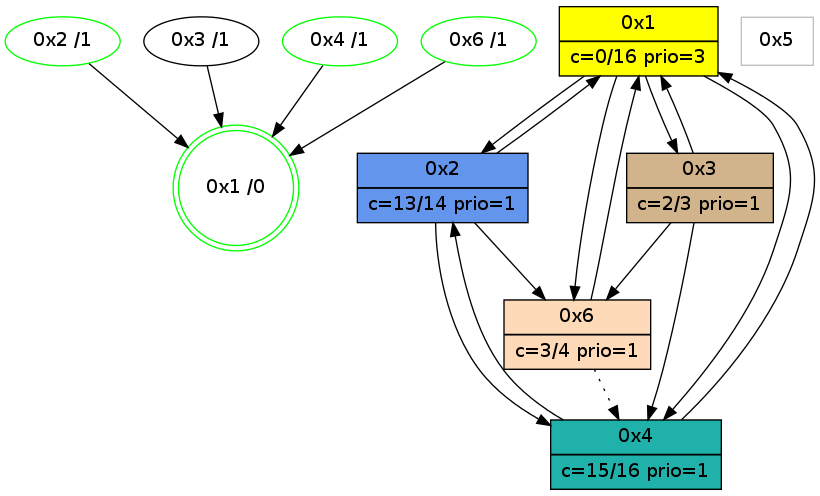

>> << IDX [start] -100 -25 -5 +0 +5 +25 +100 [1145.01647305]
 Previous packets
1140.003907 beacon02(adaf) #0 coord=01,02,05,03,04,06 cycle=944.0ms assoc 64 56 89
1140.013906 beacon05(adaf) #0 coord=01,02,05,03,04,06 cycle=944.0ms assoc 64 f0 a3
1140.023908 beacon03(adaf) #0 coord=01,02,05,03,04,06 cycle=944.0ms assoc 64 6c 87
1140.033909 beacon04(adaf) #0 coord=01,02,05,03,04,06 cycle=944.0ms assoc 64 ca ad
1140.056970 [Hello(1): seq=845 sym=2,4,6,3 color=0 sysInfo=hasWarning,MaxColorIndicationCalled,MaxColorResponseCalled,MaxColorRequestCalled,ColoringModeRequestCalled stat=2:7,3,15,0/4:14,0,0,4/6:6,2,5,0/3:2,0,3,0]
----------------------------------------------------------------------
1140.998455 beacon01(adaf) #0 coord=01,02,05,03,04,06 cycle=944.0ms assoc
-- color-indic=0 64 c3 19
1141.008417 beacon02(adaf) #0 coord=01,02,05,03,04,06 cycle=944.0ms assoc 64 92 e6
1141.018417 beacon05(adaf) #0 coord=01,02,05,03,04,06 cycle=944.0ms assoc 64 34 cc
1141.028417 beacon03(adaf) #0 coord=01,02,05,03,04,06 cycle=944.0ms assoc 64 a8 e8
1141.038418 beacon04(adaf) #0 coord=01,02,05,03,04,06 cycle=944.0ms assoc 64 0e c2
1141.048417 beacon06(adaf) #0 coord=01,02,05,03,04,06 cycle=944.0ms assoc 64 7a de
----------------------------------------------------------------------
1142.002959 beacon01(adaf) #0 coord=01,02,05,03,04,06 cycle=944.0ms assoc
-- color-indic=0 64 8e 1e
1142.012921 beacon02(adaf) #0 coord=01,02,05,03,04,06 cycle=944.0ms assoc 64 df e1
1142.022920 beacon05(adaf) #0 coord=01,02,05,03,04,06 cycle=944.0ms assoc 64 79 cb
1142.032920 beacon03(adaf) #0 coord=01,02,05,03,04,06 cycle=944.0ms assoc 64 e5 ef
1142.042921 beacon04(adaf) #0 coord=01,02,05,03,04,06 cycle=944.0ms assoc 64 43 c5
1142.052921 beacon06(adaf) #0 coord=01,02,05,03,04,06 cycle=944.0ms assoc 64 37 d9
1142.065679 [Hello(1): seq=846 sym=2,4,6,3 color=0 sysInfo=hasWarning,MaxColorIndicationCalled,MaxColorResponseCalled,MaxColorRequestCalled,ColoringModeRequestCalled stat=2:7,3,15,0/4:14,0,0,4/6:6,2,5,0/3:2,0,3,0]
----------------------------------------------------------------------
1143.007464 beacon01(adaf) #0 coord=01,02,05,03,04,06 cycle=944.0ms assoc
-- color-indic=0 64 4a 71
1143.017425 beacon02(adaf) #0 coord=01,02,05,03,04,06 cycle=944.0ms assoc 64 1b 8e
1143.027426 beacon05(adaf) #0 coord=01,02,05,03,04,06 cycle=944.0ms assoc 64 bd a4
1143.037427 beacon03(adaf) #0 coord=01,02,05,03,04,06 cycle=944.0ms assoc 64 21 80
1143.047426 beacon04(adaf) #0 coord=01,02,05,03,04,06 cycle=944.0ms assoc 64 87 aa
1143.057426 beacon06(adaf) #0 coord=01,02,05,03,04,06 cycle=944.0ms assoc 64 f3 b6
1143.073686 [STC(1) #0.203 new-neigh,tree-change,inconsistent-stability,stable,to-color d=0]
----------------------------------------------------------------------
1144.011968 beacon01(adaf) #0 coord=01,02,05,03,04,06 cycle=944.0ms assoc
-- color-indic=0 64 06 c1
1144.021929 beacon02(adaf) #0 coord=01,02,05,03,04,06 cycle=944.0ms assoc 64 57 3e
1144.031929 beacon05(adaf) #0 coord=01,02,05,03,04,06 cycle=944.0ms assoc 64 f1 14
1144.041930 beacon03(adaf) #0 coord=01,02,05,03,04,06 cycle=944.0ms assoc 64 6d 30
1144.061930 beacon06(adaf) #0 coord=01,02,05,03,04,06 cycle=944.0ms assoc 64 bf 06
1144.074814 [Hello(1): seq=847 sym=2,4,6,3 color=0 sysInfo=hasWarning,MaxColorIndicationCalled,MaxColorResponseCalled,MaxColorRequestCalled,ColoringModeRequestCalled stat=2:7,3,15,0/4:14,0,0,4/6:6,2,5,0/3:2,0,3,0]